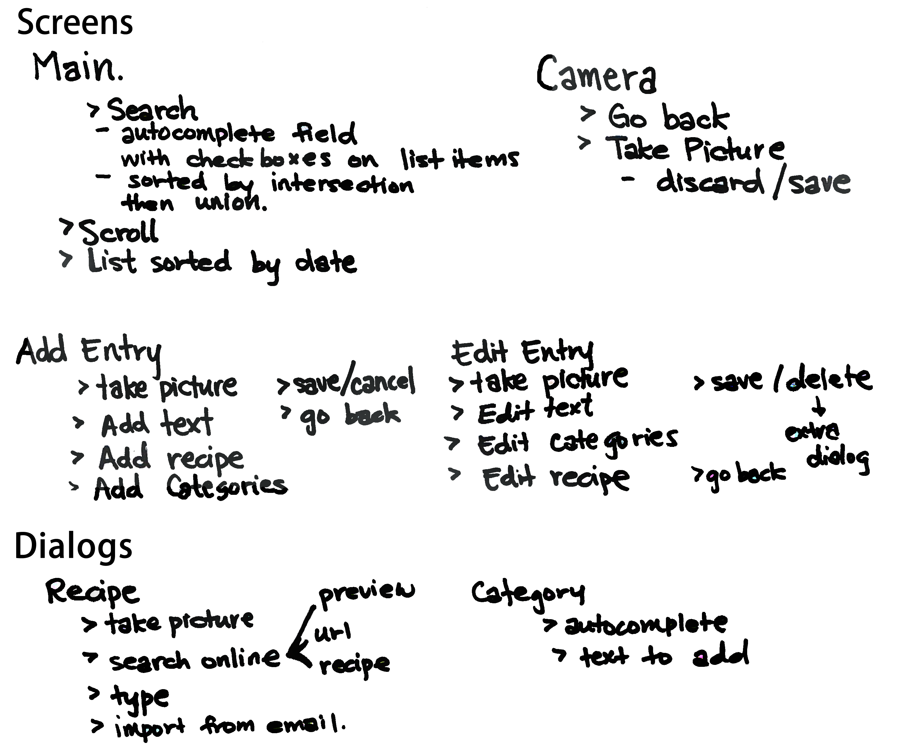

Site Map


This second 'site map' is more of an interactive look at the options the user can exercise on each of the pages. The main page has a search option that allows the users to filter the recipies on their main screen by one of the predetermined filters (main dishes, appetizers, desserts, etc.). The main page also is scrollable and has a list of recipies that the user has entered sorted by date.
The camaera page enables the phone's camera, and allows the user to go back to the main screen or take a picture (and then to either discard or save the picture that was just taken).
The add entry page allows the user to enter information in the following fields listed in the image, where all the fields will be editable.
The edit entry page is similar to the add entry page (as far as it's function of editing the information about a dish), but instead of editable fields, each of the fields is fixed with an edit hyperlink next to each one.
When a user selects to either add or edit a recipe the recipe dialogue will appear and allow a user to add/edit a recipe by entering a recipe by one of the formats shown in the list.
When a user selects to either add or edit a category on a dish, a drop down with the previously saved categories will appear, where there will also be an option to add a new entry.
Wireframes
For all of the pages and many of the interactions listed above, we have digitally sketched out what we'd like our interface to look like.The Main Page

Filtering the Main Page Dishes

The Camera Page

The Add Entry Page

Adding a Recipe


Adding a Category

The Edit Entry Page

Sharing a Dish